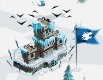
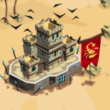
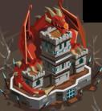

Forteresses
Présentation
Chaques royaumes a son type de forteresse : forteresse des fieffés coqiuins pour le grand empire, forteresse barabre au glacier, forteresse du désert aux sables et du culte aaux pics du feu.
Apparence



Attaque
Attaquer la forteresse des fieffés coquins (grand empire) complète la quête du camp de l'espion. En récompense du pillage (bois-pierre-pièces) il y a 30 rubis ET une protectino contre les attaques des fieffés pour 7 jours.
attaquer une forteresse au glacier permet de gagner 50 rubis en plus du pillage (bois-pierre-bouffe-charbon).
Pour la forteresse du désert, c'est 100 rubis par attaque et 150 pour les forteresses aux pics.
En pratique
Une forteresse (glacier-sables-pics) peut-être attaquée toutes les 24 heures. Pour avoir un bon aperçu des forteresse à attaquer ou non, il y a un site qui répertorie les forteresses qui peuvent être attaquées, leur position, royaume et temps avant de pouvoir être attaaqué à nouveau.
>>> Forteresses
Attaquer une forteresse
Pour attaquer une forteresse, il faut être assez rapide. Pour cela, le meilleure moyen est d'envoyer des soso rapides (laanceur de kunaï, chien-loup, voir loup féroce si possible).
Remplir les 4 vagues avec des chiens-loup/loups féroce et lancer l'attaque, sans oublier de mettre les plumes pour aller plus vite. Même avec cette méthode, toutes les forteresses ne sont pas atteintes à temps, mais les récompenses dépassent les coûts.